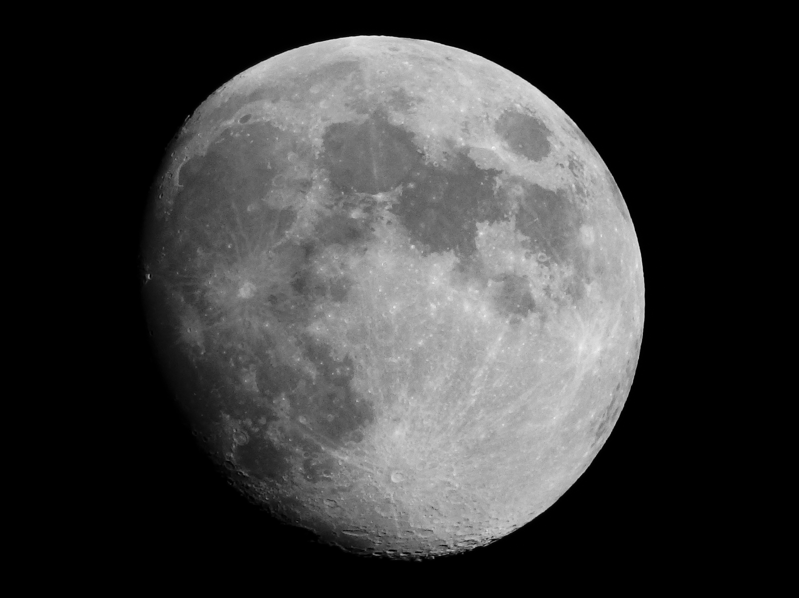

Découvrez l'histoire des premiers hommes sur la Lune
À la suite de la Seconde Guerre mondiale, le monde entra dans une nouvelle période marquée par des tensions croissantes entre deux superpuissances : les États-Unis et l'Union soviétique...
Face aux avancées soviétiques, le président américain John F. Kennedy s’adressa à la nation et au monde. En mai 1961, il lança un défi ambitieux : faire en sorte qu’un Américain marche sur la Lune et revienne sain et sauf avant la fin de la décennie...
La NASA, l’agence spatiale des États-Unis, entreprit la mise en œuvre d’un projet qui changera le tournant de la conquête spatiale : le programme Apollo. Au fil des années, ingénieurs, scientifiques et astronautes unirent leurs efforts, repoussant les frontières de la technologie et de l’ingénierie pour réaliser cet exploit. Les missions de test se multiplièrent, chacune contribuant à des avancées significatives tout en affrontant de nombreux défis.
Le 16 juillet 1969 marqua la fin du compte à rebours. Apollo 11, la mission chargée de concrétiser le défi lancé par Kennedy, était sur le point de décoller. À bord se trouvaient trois astronautes : Neil Armstrong, Buzz Aldrin et Michael Collins, porteurs de l’espoir et de l’ambition d’une nation tout entière.
Sous les yeux du monde entier, les trois astronautes enfilèrent leurs combinaisons et se préparèrent à embarquer dans la fusée Saturn V. L’atmosphère était chargée de tension. Alors qu’ils prenaient place dans la capsule, le monde entier retenait son souffle, conscient de l’immensité de l’inconnu qui les attendait.
Le lancement d’Apollo 11 était diffusé en direct à travers le monde, captivant des millions de spectateurs de toutes origines. Partout, les gens se réunissaient pour assister à ce moment historique. Dans un puissant nuage de flammes et de fumée, la fusée s’élança vers le ciel, portant avec elle les espoirs de l’humanité tout entière.
Le 16 juillet 1969, à 9h32 du matin, la fusée Saturn V décolla du centre spatial Kennedy. Plus grande qu'un immeuble de trente étages, elle s’élança vers le ciel, défiant la gravité de la Terre. Apollo 11 débuta ainsi son périple vers la Lune.
Après 21 heures et 30 minutes de voyage, Apollo 11 approche de sa destination. Les astronautes se préparèrent pour l'étape cruciale : l'atterrissage sur la Lune. L'adrénaline montait alors que l'atterrisseur, baptisé Eagle, se séparait du module de commande.
Le 20 juillet 1969, après un vol sans incident majeur, Eagle se posa enfin sur la surface lunaire. "Houston, ici la base de la Tranquillité. L’aigle a atterri", annonça Neil Armstrong à la Terre...